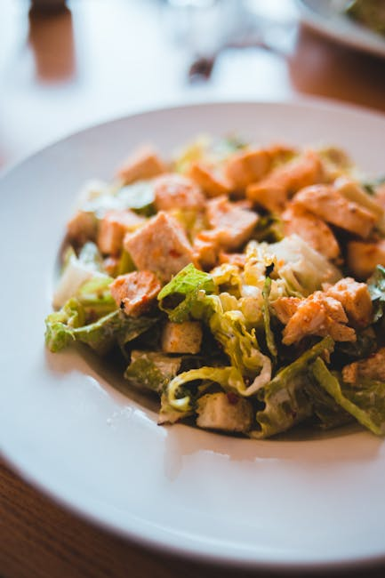

← Back to all nutrition guides | About Our Content
How To Eat Better Without Strict Diets
Reviewed by The Today's Food Coach Team
Our team of nutrition researchers and AI specialists ensures every guide is accurate and practical.
A realistic guide for busy professionals over 40.
Eating better without strict diets is an achievable goal for men aged 40 to 65 who seek to lose weight and enhance their health. Many people associate healthy eating with rigid calorie counting or complicated meal plans. However, small, sustainable changes can make a significant difference over time. Emphasizing balance and moderation can lead to improved well-being and effective weight management. The key is to focus on enhancing your diet without falling into the trap of temporary restrictions. By adopting healthier food choices, you can enjoy delicious meals while gradually shedding pounds. This article provides practical strategies to help you eat better without the stress of strict dieting.
Want a personalized version of this strategy?
Try the AI Food Coach
Why How To Eat Better Without Strict Diets Matters
Understanding why healthier eating habits are essential goes beyond just weight loss. As men age, metabolic rates slow down, and the risk of chronic diseases such as heart disease, diabetes, and high blood pressure increases. Eating better can help combat these issues, promoting heart health and better overall physical function. Moreover, adopting healthier eating habits can elevate mood and improve mental clarity, which is crucial as one navigates through life's responsibilities. More importantly, these habits can improve energy levels, making daily tasks feel less daunting and leading to a higher quality of life. Instead of focusing solely on losing weight, it is vital to appreciate that eating better fosters longevity and vitality. By focusing on nourishing your body and enjoying food, you can create a sustainable approach that keeps you feeling good and energized as you age.
Simple Strategy
- Incorporate more whole foods like fruits, vegetables, and whole grains into your meals.
- Practice mindful eating by slowing down and savoring every bite.
- Drink plenty of water throughout the day to stay hydrated and help manage hunger.
These strategies work best when personalized to your lifestyle and goals.
Build Your Personalized Nutrition Plan
Most people know what foods are healthy. The hard part is knowing what to eat today. Today's Food Coach creates a simple, personalized daily plan based on your goals and lifestyle.
Start Your PlanExample Day of Eating
Start your day with a hearty breakfast of oatmeal topped with fresh berries and a handful of nuts. For lunch, enjoy a large salad filled with leafy greens, colorful vegetables, grilled chicken, and a light vinaigrette. In the evening, opt for a balanced dinner featuring baked salmon, quinoa, and steamed broccoli. Don't forget healthy snacks like yogurt or a piece of fruit to keep you satisfied throughout the day.
Common Mistakes
- Relying on processed foods that are marketed as healthy.
- Skipping meals which can lead to overeating later.
- Ignoring portion sizes, even with healthy foods.
Practical Tips
- Keep healthy snacks on hand to avoid unhealthy cravings.
- Experiment with herbs and spices instead of excess salt or sugar.
- Plan your meals weekly to ensure you stay on track with healthy choices.
Frequently Asked Questions
What are some easy ways to add more vegetables to my diet?
Try adding spinach to smoothies, incorporating veggies into omelets, or having a side salad with every meal.
How can I avoid emotional eating?
Practice mindfulness and find enjoyable hobbies that distract from emotional triggers associated with eating.
Is it necessary to eliminate all indulgent foods?
No, moderation is key; enjoying your favorite foods occasionally can prevent feelings of deprivation.
Related Nutrition Guides
- How To Speed Up Metabolism After 45
- What To Do Instead Of Eating At Nightwhy Is It Harder To Lose Weight After 40
- Daily Routine For Weight Loss Over 40
Try Today's Food Coach
Generate a personalized meal strategy based on your lifestyle and goals.
Try the AI Food Coach